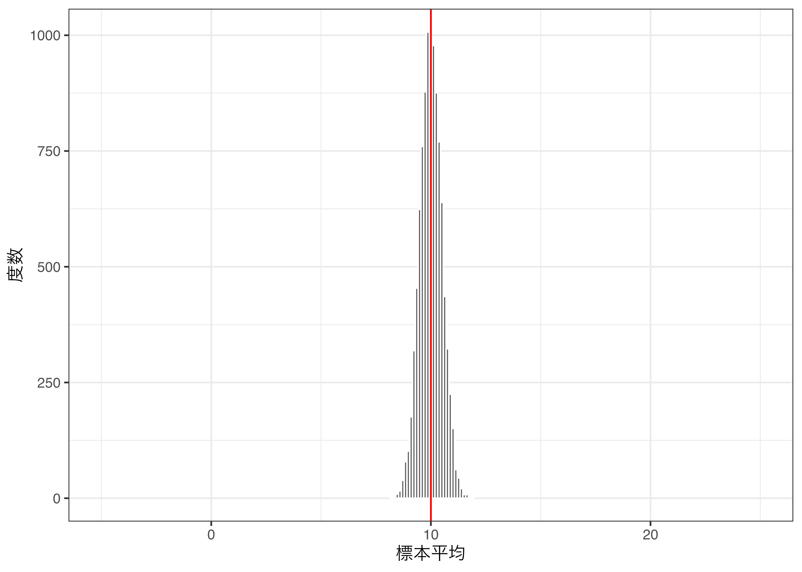

library(tidyverse)中心極限定理
set.seed(19861008)正規分布の例
- \(\mu\)と\(\sigma\)
- 期待値は\(\mu\)
- 分散は\(\sigma^2\)であり、標準偏差は\(\sigma\)
- \(\mu = 10\)、\(\sigma = 5\)の正規分布（ 図 1 ）の場合、期待値は10、標準偏差は5

vec1 <- rep(NA, 10000)
for (i in 1:10000) {
vec1[i] <- mean(rnorm(1, mean = 10, sd = 5))
}
vec1 %>%
enframe(name = "trial", value = "mean") %>%
ggplot() +
geom_histogram(aes(x = mean), color = "white") +
geom_vline(xintercept = 10, color = "red") +
coord_cartesian(xlim = c(-5, 25)) +
labs(x = "標本平均", y = "度数") +
theme_bw()mean(vec1)[1] 9.993612sd(vec1)[1] 5.052632vec2 <- rep(NA, 10000)
for (i in 1:10000) {
vec2[i] <- mean(rnorm(10, mean = 10, sd = 5))
}
vec2 %>%
enframe(name = "trial", value = "mean") %>%
ggplot() +
geom_histogram(aes(x = mean), color = "white") +
geom_vline(xintercept = 10, color = "red") +
coord_cartesian(xlim = c(-5, 25)) +
labs(x = "標本平均", y = "度数") +
theme_bw()
mean(vec2)[1] 9.994122sd(vec2)[1] 1.584378vec3 <- rep(NA, 10000)
for (i in 1:10000) {
vec3[i] <- mean(rnorm(100, mean = 10, sd = 5))
}
vec3 %>%
enframe(name = "trial", value = "mean") %>%
ggplot() +
geom_histogram(aes(x = mean), color = "white") +
geom_vline(xintercept = 10, color = "red") +
coord_cartesian(xlim = c(-5, 25)) +
labs(x = "標本平均", y = "度数") +
theme_bw()
mean(vec3)[1] 10.00129sd(vec3)[1] 0.4980742一様分布の例
- 最小値（\(a\)）と最大値（\(b\)）
- 期待値は\(\frac{a + b}{2}\)
- 分散は\(\frac{(b - a)^2}{12}\)であり、標準偏差は\(\frac{b - a}{\sqrt{12}}\)
- \(a = 5\)、\(b = 15\)の一様分布（ 図 2 ）の場合、期待値は10、標準偏差は約2.89
vec4 <- rep(NA, 10000)
for (i in 1:10000) {
vec4[i] <- mean(runif(100, min = 5, max = 15))
}
vec4 %>%
enframe(name = "trial", value = "mean") %>%
ggplot() +
geom_histogram(aes(x = mean), color = "white") +
geom_vline(xintercept = 10, color = "red") +
labs(x = "標本平均", y = "度数") +
theme_bw()mean(vec4)[1] 9.999566sd(vec4)[1] 0.2892989ポアソン分布の例
- \(\lambda\)のみ
- 期待値は\(\lambda\)
- 分散は\(\lambda\)であり、標準偏差は\(\sqrt{\lambda}\)
- \(\lambda = 10\)のポアソン分布（ 図 3 ）の場合、期待値は10、標準偏差は約3.16
vec5 <- rep(NA, 10000)
for (i in 1:10000) {
vec5[i] <- mean(rpois(100, lambda = 10))
}
vec5 %>%
enframe(name = "trial", value = "mean") %>%
ggplot() +
geom_histogram(aes(x = mean), color = "white") +
geom_vline(xintercept = 10, color = "red") +
labs(x = "標本平均", y = "度数") +
theme_bw()mean(vec5)[1] 10.00047sd(vec5)[1] 0.3174378ガンマ分布の例
- 形状パラメーター（\(k\)）と尺度パラメーター（\(\theta\)）
- 期待値は\(k\theta\)
- 分散は\(k\theta^2\)であり、標準偏差は\(\sqrt{k}\theta\)
- \(k = 2\)、\(\theta = 5\)のガンマ分布（ 図 4 ）の場合、期待値は10、標準偏差は約7.07
vec6 <- rep(NA, 10000)
for (i in 1:10000) {
vec6[i] <- mean(rgamma(100, shape = 2, scale = 5))
}
vec6 %>%
enframe(name = "trial", value = "mean") %>%
ggplot() +
geom_histogram(aes(x = mean), color = "white") +
geom_vline(xintercept = 10, color = "red") +
labs(x = "標本平均", y = "度数") +
theme_bw()mean(vec6)[1] 10.00008sd(vec6)[1] 0.7052151